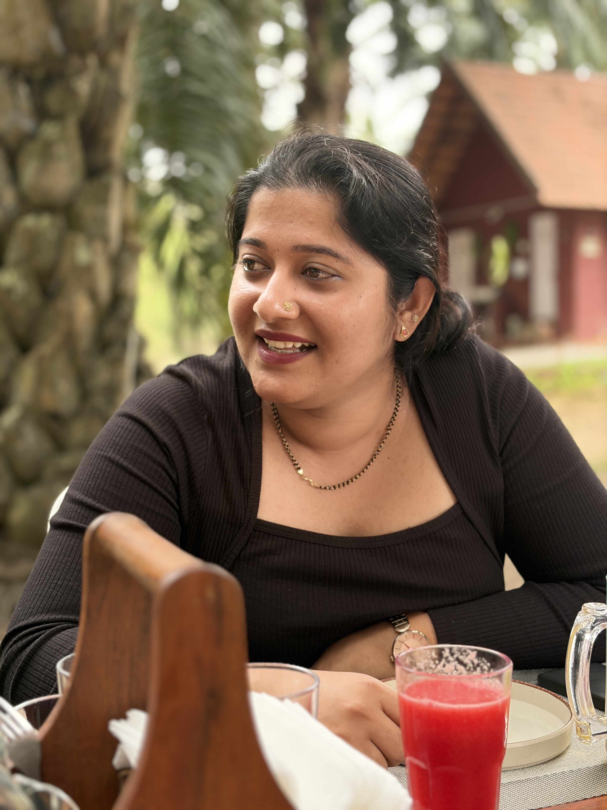
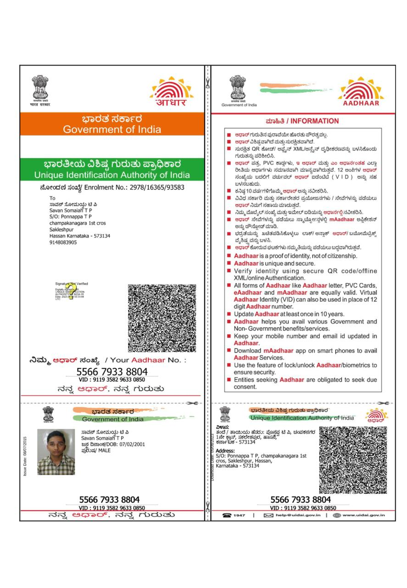

Cafe Reel
Morning Service
Commercial & Brand Photographer
Luxury visual stories for products, plates, places, and brands.
Random Frames creates refined campaign imagery and cinematic social content for brands that care about atmosphere, texture, and desire.


RF
Product Photography
Food & Beverage Photography
Brand Visuals
Commercial Content
Cafe Reels
Product Photography
Food & Beverage Photography
Brand Visuals
Commercial Content
Cafe Reels
About
Frames that make a brand feel expensive before a word is read.
Led by Savan Somaiah T P, Random Frames works across product, food, beverage, cafe, and commercial imagery with an editorial eye: quiet details, strong composition, and a finish built for premium campaigns.
Every shoot is designed around mood, light, surface, and selling power, translating brand intent into polished visuals for web, social, menus, launches, and paid media.
Featured Work
Commercial imagery arranged by appetite and object desire.
01
Food Photography
Atmospheric food and beverage frames built for menus, cafe campaigns, launches, and social appetite.
02
Product Photography
Editorial product images with clean composition, premium surface language, and brand-ready polish.
Motion Showcase
Vertical reels designed for appetite, rhythm, and recall.
Food Motion
Texture Cut
Commercial
Brand Flow
Client Experience
A polished process from concept to final delivery.
Random Frames keeps productions calm and precise, building visual direction, shot flow, lighting, and post-production around the brand’s commercial goal.
01
Art Direction
Mood, references, shot lists, and styling direction aligned before shoot day.
02
Production
Premium lighting, composition, and motion capture for photo and reel assets.
03
Delivery
Edited, campaign-ready files prepared for social, menu, web, and launch use.
Work With Me
Bring a campaign, launch, or menu story into focus.
Start a ProjectContact
Random Frames
Savan Somaiah T P
Commercial & Brand Photographer